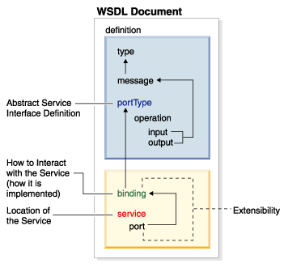
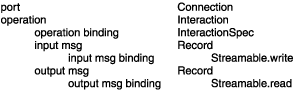
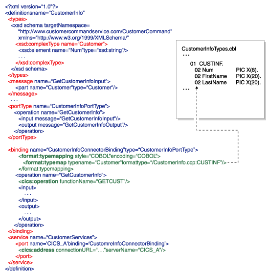
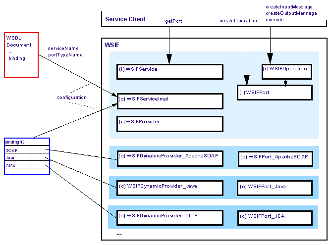
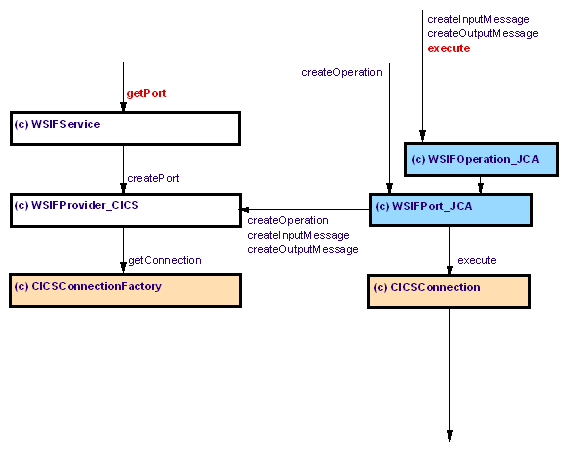
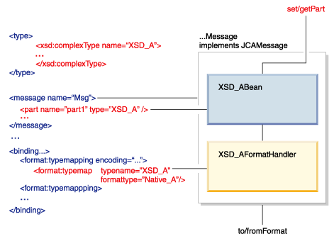

The WSIF Extensions for J2EE Connector Architecture (J2C) allow Enterprise Information Systems (EIS) to provide the following:
J2EE Connector Architecture 1.0 (specification available at: "http://java.sun.com/j2ee/download.html#connectorspec") provides a runtime architecture that allows EIS Resource Adapters to plug into a J2EE Application Server environment. The WSIF Extensions for J2C extend it to bring the Resource Adapters into the world of services and also make them pluggable into tool environments. The extensions specify the format of metadata that an EIS must provide and define how a tool environment interacts with an EIS to get this information, i.e. define the Import Service with operations to list and import the EIS metadata in the tool environment independent manner. The extensions also show how the EIS provides code generation contributions. To support the execution of interactions, the extensions provide a set of classes and interfaces that allow EIS to easily, especially if Resource Adapter supports CCI, implement its specific WSIF provider.
Metadata support is important from two perspectives. First, tools want to be able to discover meta information about the functions offered by an EIS. The tools then aid a developer in building components (for example, Java Beans, EJBs and others) that use these functions. runtimes either drive a connector through code generated by the tools from the metadata, or they are engines that drive a connector by interpreting the metadata.
The following picture shows the WSDL document architecture. Shown at the top are the sections that allow you to describe a service interface in an abstract way. WSDL prefers to use XML Schema as its canonical type system. The sections at the bottom describe how and where to access the concrete service that implements the abstract interface. Looking at the W in WSDL may cause you to think that the language is for describing Web Services only, but this is not true. The inventors equipped the language with a smart extensibility mechanism, which allows you to describe any kind of service, be it a Web Service or some legacy EIS service (function).

WSDL provides a standard way for describing which services are offered by a specific EIS instance, and how you access them. The J2EE Connector Architecture provides a standard client programming model for accessing EIS services.
If you look at the WSDL information that is relevant for the single execution of an operation you end up with a very natural fit between the two:

To invoke an operation through a connector we have to be able to capture meta information about the following aspects:
ManagedConnectionFactory describes location or providing endpoint of the operation. The requirement for the Connector Binding is to provide a port extension to capture this information.
The InteractionSpec specifies the operation in a way that is understood by the endpoint. The Connector Binding is required to provide an operation binding extension to capture this information.
For Records you need to know their structure and the way that they have to be formatted so that an endpoint is able to interpret them. The structure is defined by XML Schema from which you can derive a Java representation, as described later. It is the format aspect that imposes a requirement on the Connector Binding. It has to provide a format binding extension to capture the specific formatting information (see format binding section).

<definitions .... >
<binding ...>
<connector:binding />
format:typeMapping encoding="..." style="...">
<format:typeMap
typeName="..."
formatType="..." /> *
</format:typeMapping>
<operation .... >
<connector:operation functionName="name"...
interaction attributes ... />
<input>
...
</input>
<output>
...
</output>
</operation>
</binding>
<port .... >
<connector:address hostName="uri" portNumber="..."
...connection attributes ... />
</port>
</definitions>
The purpose of the connector binding is to signify that the binding is bound to a J2C based Resource Adapter. A "connector" is the short name for the namespace that identifies the particular connector, for example <cics:binding />
The connector operation contains the InteractionSpec attributes that are necessary to execute the operation on the EIS side, for example <cics:operation functionName="GETCUST" />
The connector address contains the attributes of the ManagedConnectionFactory, necessary to configure the connection factory, for example <cics:address connectionURL="..." serverName="..." />
The format typeMapping identifies the style and encoding of the native types. The typeMapping contains format typeMaps which associate the logical format (XML Schema) with the native format.
The native format is identified by a format type identifier.
Here a sample where the native format type is described by COBOL:
<format:typeMapping encoding="COBOL" style="COBOL" >
<format:typeMap typename="Customer" formatType="CustomerInfo.ccp:CUSTINF"/>
</format:typeMapping>
This standard way for describing the services that reside in an EIS using WSDL simplifies the current client programming model (CCI) by using Web Service Invocation Framework (WSIF), a WSDL based service invocation runtime.
The first thing necessary to set up for a service invocation is a port. Ports are factored from services (implementations of the WSIFService interface). WSIF ships the base service factory (WSIFServiceFactory) which is configured using the WSDL document, the service name, and the portType name from which you want to create a port to access an operation.
Additionally, the WSIFService is configured using a binding specific dynamic providers (implementations of the WSIFProvider interface). These providers are the actual factories of the binding specific ports (implementations of the WSIFPort interface)
The actual port implementation is not visible to the client. The client uses the WSIFPort interface to create a specific operation for driving an execution.

Enabling a J2C connector for WSIF is very straightforward. The element that a Resource Adapter must implement is the dynamic provider. Depending on the native format, a Resource Adapter may need to provide a specific message implementation. In general the Resource Adapter does not have to provide a specific port and operation implementation, since the WSIF Extensions for J2C provide a generic one that is based on J2C CCI.

If the Resource Adapter's native format is stream based then it can use the provided WSIFMessage_JCAStreamable as it's message implementation. This class extends a class named WSIFMessage_JCA. If a specific message implementation is required, it should extend WSIFMessage_JCA.
The J2C WSIF Provider runtime implementation contains the following classes/interfaces in the package org.apache.wsif.providers.jca.
Format handling is about marshalling the Java representation of a data structure described by XML Schema to/from its binding dependent native format. Separating the Java representation and format handling enables late binding, and prevents the service client logic from using objects that are binding specific.
On service invocation, messages (input, output, fault) get exchanged with the provider of the service. Messages consist of typed parts. In order for the provider to understand them the invocation runtime has to transform them into the providers native format.
Looking at the WSDL, it can be seen that a binding section defines type mappings that map the XML Schema types to respective native types. Given the meta information from the WSDL the user can generate two runtime elements. One is a bean as the Java representation of the structure described by XML Schema. The other is a FormatHandler which is generated based on the defined format typeMapping.

In order for a message implementation to produce its native format it uses the format handlers for its respective part types. The message is a generic implementation for a particular provider. So how does the message know which format handler to use for its parts? A runtime message knows about the meta information of the concrete message it was factored for. So it knows what type its parts have. These types have qualified names (namespace and localname).The rule for constructing the name of the format handler is:
<reversed xsd typenamespace>.<binding shortname>.<format encoding+style>.<xsd typelocalname>"FormatHandler"
The WSIFUtil class, in WSIF, provides a set of utility methods that can be used in the message implementation (for example to use the above formula) as well as in the implementation of the format handler generator. Besides being able to handle a bean derived from the XSD Schema type, the format handler can in addition also support instance of the XSD Schema type in form of a DOMSource or SAXSource. This allows for direct usage of XML in your service invocation if required.
To support EIS native formats the Resource Adapter has to provide format handler generators with its WSIF J2C Extensions. Each format handler generator generates format handlers for a specific encoding and style, possibly using the type mapping information from the FormatBinding. The generator implements FormatHandlerGenerator interface described later.
Many EIS's have very rich metadata support describing the services they offer. EIS's provide programmatic access to this meta information. This poses a problem for tools in that the form of the metadata and the access to it is proprietary for each EIS. The EIS import service solves this problem by providing a standard interface for accessing the meta information, and it delivers the meta information in the standard form of WSDL. The EIS implements (i.e. provides bindings and service of the import service) the import service with its EIS Resource Adapter.
The Import interface consists of three operations getPortTypes, getDefinition and getRawEISMetaData.
The getPortTypes operation allows you to get an overview about the interfaces and operations the EIS offers. The operation returns an array of portTypes, the number of portTypes returned can be controlled through the queryString input argument (supporting the queryString is optional).
Note, if your EIS does not have the notion of interfaces you can just return one portType containing all the operations your EIS offers.
The getDefinition operation allows you to retrieve the complete service definition for a chosen portType selection. Besides selecting the portType, the portType selection allows a subset of the portType by identifying the operations that you are interested in. The operation returns the WSDL definition, and an array of XML Schema sources for the case when the portType uses XML Schema complex types.
The optional operation, getRawEISMetaData returns a binary data that may be used by the Resource Adapter to cache the EIS metadata repository.
<?xml version="1.0" encoding="UTF-8"?>
<definitions name="ImportRemoteInterface"
targetNamespace="http://importservice.jca.providers.wsif.apache.org/"
xmlns="http://schemas.xmlsoap.org/wsdl/"
xmlns:tns="http://importservice.jca.providers.wsif.apache.org/" xmlns:xsd="http://www.w3.org/2001/XMLSchema">
<import location="Import.xsd" namespace="http://importservice.jca.providers.wsif.apache.org/"/>
<message name="getDefinitionRequest">
<part name="portTypeSelection" type="tns:PortTypeSelection"/>
</message>
<message name="getDefinitionResponse">
<part name="result" type="tns:ImportDefinition"/>
</message>
<message name="getPortTypesRequest">
<part name="queryString" type="xsd:string"/>
</message>
<message name="getPortTypesResponse">
<part name="result" type="tns:PortTypeArray"/>
</message>
<message name="getRawEISMetaDataRequest">
<part name="queryString" type="xsd:string"/>
</message>
<message name="getRawEISMetaDataResponse">
<part name="result" type="xsd:base64"/>
</message>
<portType name="Import">
<operation name="getDefinition" parameterOrder="portTypeSelection">
<input message="tns:getDefinitionRequest" name="getDefinitionRequest"/>
<output message="tns:getDefinitionResponse" name="getDefinitionResponse"/>
</operation>
<operation name="getPortTypes" parameterOrder="queryString">
<input message="tns:getPortTypesRequest" name="getPortTypesRequest"/>
<output message="tns:getPortTypesResponse" name="getPortTypesResponse"/>
</operation>
<operation name="getRawEISMetaData" parameterOrder="queryString">
<input message="tns:getRawEISMetaDataRequest" name="getRawEISMetaDataRequest"/>
<output message="tns:getRawEISMetaDataResponse" name="getRawEISMetaDataResponse"/>
</operation>
</portType>
</definitions>
To simplify the implementation of the Import service, the WSIF Extensions for J2C include a set of convenience classes in the org.apache.wsif.providers.jca.toolplugin package. These classes provide Java representation of the XSD types used in the import service and simplify the development of the Import Service.
- ImportDefinition.java
- ImportResource.java
- ImportXSD.java
- OperationSelection.java
- PortTypeArray.java
- PortTypeSelection.java
To allow an arbitrary tools environment to detect this additional capability a connector implementation has to provide the following deployment descriptor xml file (j2c_plugin.xml) in its rar file. It describes details of the implementation, for example the names of classes implementing extensibility elements or the name of the WSDL file providing bindings for the Import service interface. A sample of the xml file is shown below:
<j2c_plugin tns="http://schemas.xmlsoap.org/wsdl/myeis/" name="MyEIS"><Description>MyEIS</Description><version>1.0</version><wsdl_extensions><address classname="com.myeis.wsdl.extensions.j2c.myeis.MyEISAddress"/><binding classname="com.myeis.wsdl.extensions.j2c.myeis.MyEISBinding"/><operation classname="com.myeis.wsdl.extensions.j2c.myeis.MyEISOperation"/><extension_registry classname="com.myeis.wsdl.extensions.j2c.myeis.MyEISExtensionRegistry" /></wsdl_extensions><wsif_extensions classname="com.myeis.wsif.providers.j2c.myeis.WSIFProvider_MyEIS" /><import><service wsdlfile="com/myeis/j2c/importservice/myeis/ImportMyEIS.wsdl" servicename="ImportService" ></service></import><formathandler<generator encoding="myeis" classname="com.myeis.j2c.myeis.formathandler.MyEISFormatHandlerGenerator" /></formathandler></j2c_plugin>
The distribution of the WSIF Extensions for Connector Architecture includes a sample Resource Adapter, MyEIS, illustrating how to extend the Connector to enable it for pluggability into tool environments, implement model and runtime extensions and the Import Service.